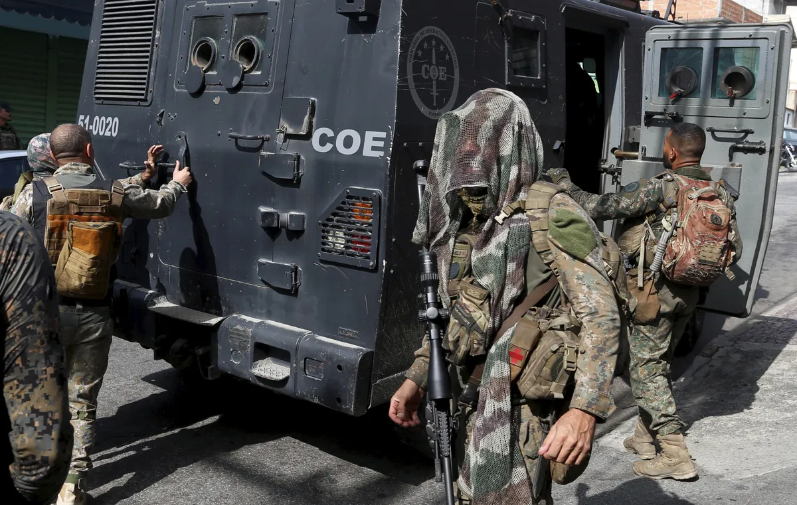
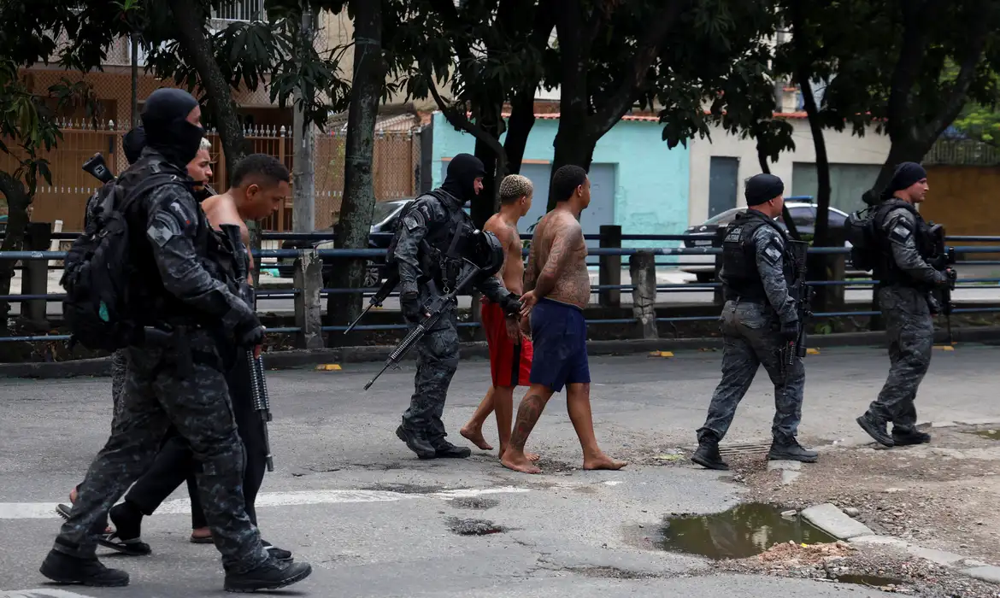

Contexto Histórico e o Estopim da Operação
Os Complexos do Alemão e da Penha são regiões estratégicas no Rio de Janeiro. A recente megaoperação policial conjunta, deflagrada com o objetivo de combater a expansão do Comando Vermelho (CV) e cumprir mandados de prisão, resultou no episódio mais letal da história do estado. O confronto mobilizou milhares de policiais e paralisou serviços essenciais na região.
Balanços e Impactos
Balanço de Mortos
O número de mortes varia drasticamente entre os balanços oficiais do Governo (inicialmente 64, sendo 4 policiais) e os relatos de moradores e Defensoria Pública (que chegaram a falar em mais de 130 vítimas, a maioria civis).
Galeria de Mídia


Fontes de Informação
- CNN Brasil: Megaoperação no Alemão e na Penha é a mais letal do RJ...
- Estadão: Defensoria do Rio diz que há 132 mortos...
- Agência Brasil: Moradores do Alemão e da Penha protestam...